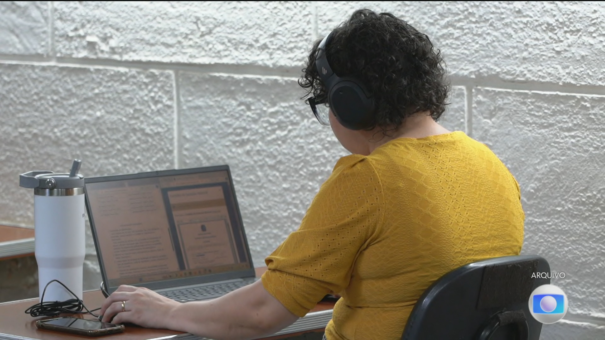

inteligência artificial
MEC aprova diretrizes para o uso de inteligência artificial da educação infantil ao ensino superior
11/11/2026 às 03:36 (horário de Cuiabá)

O Ministério da Educação (MEC) homologou uma resolução do Conselho Nacional de Educação (CNE) que estabelece regras para a utilização de inteligência artificial em todas as etapas de ensino, abrangendo instituições públicas e privadas com prazo de um ano para adaptação. As diretrizes determinam que a tecnologia deve atuar estritamente como ferramenta auxiliar, mantendo sob a responsabilidade dos professores a mediação pedagógica, a atribuição de notas e as deliberações sobre aprovação ou reprovação.
O documento veda o uso da IA na educação infantil e impede a utilização autônoma por estudantes até o quinto ano do fundamental, liberando o acesso apenas por meio de atividades planejadas e mediadas pelos docentes. Do sexto ano em diante e no ensino médio, o uso é permitido com acompanhamento humano. Já as instituições de ensino superior terão liberdade para empregar a ferramenta em planos de ensino, pesquisa e extensão, desde que instituam normas próprias de transparência.
Para assegurar a proteção de dados e direitos dos estudantes, a resolução também proíbe punições disciplinares baseadas exclusivamente em detectores automatizados e a correção integralmente autônoma de redações ou provas dissertativas. Além disso, práticas como vigilância biométrica contínua, reconhecimento automatizado de emoções, criação de sistemas de pontuação social e destinação de informações escolares para publicidade direcionada ficam expressamente proibidas.